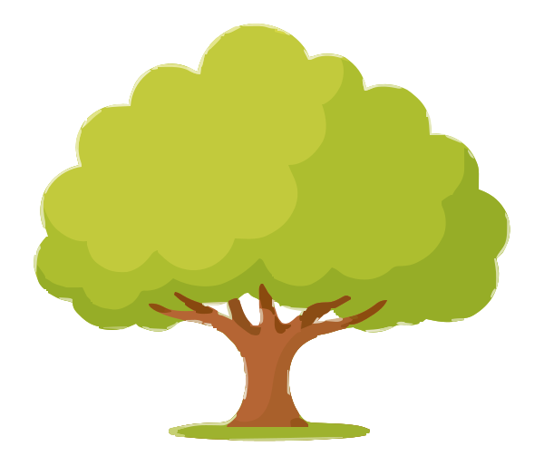

EDUCATION
Education
One stage at a time.
They say real progress is invisible. I show them my GitHub contribution graph.
— AniruddhaHey! I'm Aniruddha
I believe the best way to learn is by building. My journey started with Java and has grown into creating desktop applications, interactive websites, and game projects that combine clean engineering with thoughtful design. Whether I'm designing a multiplayer chess application, experimenting with modern web animations, or exploring Linux development, I'm constantly looking for ways to build software that's both functional and memorable.
India 🇮🇳
Building from here, shipping everywhere.Class XII
Learning by building every day.Java
Where most of my ideas come to life.Daily Driver
Terminal is where I feel at home.Player & Builder
I enjoy both playing and programming chess.Matchday Ready
Always up for a great game.Games & Software
Turning ideas into interactive experiences.Next.js & Motion
Exploring modern web technologies.A journey of code, creativity, and constant learning.
Ideas transformed into
real software.
The best project is always
the next one.
One stage at a time.
Click an apple to pluck it

Animated Next.js site with scroll reveals and Framer Motion micro-interactions.
Pick ProjectShell scripts and dotfiles that automate a full Linux dev environment setup.
Pick ProjectPlaceholder description — tell me what this project is and I'll write the real copy.
Pick ProjectPlaceholder description — tell me what this project is and I'll write the real copy.
Pick ProjectPlaceholder description — tell me what this project is and I'll write the real copy.
Pick ProjectPlaceholder description — tell me what this project is and I'll write the real copy.
Pick ProjectMilestones worth celebrating.
About
Stats
Education
Projects
Achievements
Epilogue
The story so far, to be continued.
None of this started with a line of code.
It started on quiet afternoons nobody was watching, in late nights where one bug just wouldn't quit, and in the number of times giving up would honestly have been the easier option.
This isn't really a portfolio of projects, not to me.
It's more like a pile of questions I slowly worked out the answers to, mistakes I only understood after the fact, and a stubborn kind of curiosity that kept asking, "okay, one more try?"
There's a version of me in every one of these lines who knew a little less than the one writing this right now.
For Mom and Dad...
Long before there was any code, there was a house that let a kid be curious without ever asking why.
Thank you for believing in me before I'd done anything to earn it.
Every chance I've had to chase something started with your patience, everything you quietly gave up along the way, and a kind of faith in me I didn't always notice at the time.
Nothing on this site is mine alone.
Some of you is in all of it.
For every teacher...
The lessons that actually stuck weren't always the ones written on the board.
Once in a while it was a question I couldn't stop turning over long after class had ended.
Other times it was a single sentence, said at exactly the right moment, that mattered more than it probably seemed to you.
Thank you for showing me the point was never having every answer.
It was staying willing to keep asking.
For my friends...
Thank you for the conversations that had absolutely nothing to do with code, and somehow still made it easier to sit back down and keep going.
For the laughing after a rough day.
For the encouragement you probably forgot you even gave.
None of this would have felt the same without you around.
To everyone on the internet who shared what they knew...
A tutorial.
A GitHub repo.
A random Stack Overflow answer.
A page buried three clicks deep in some documentation.
You answered a question for someone you were never going to meet.
That someone was me, more than once.
Thank you for putting what you knew out into the world instead of keeping it to yourself.
To ChatGPT, Claude, Gemini, and every AI that helped me learn...
You didn't write any of this for me.
You weren't there for the hours lost to the same bug, the doubt that comes with it, or the relief when it finally clicked.
Those were mine to go through.
But every single time I hit a wall, there was another explanation waiting, another way to think about the problem, one more reason to keep going.
You didn't do the work for me.
You just made sure I was never stuck with nowhere left to turn.
Some days, that turned out to be the whole difference.
To my younger self...
The kid messing around in QBASIC with absolutely no clue he'd just taken the first step.
You had no idea Java was coming.
Or Scaccomatto.
Or Alekhine Studios.
Or a plan to study Cyber Security at ITMO University one day.
You just wanted to know how things worked underneath.
Turns out that was reason enough.
Curiosity is how all of this actually starts.
And to you...
Thank you for reading all the way to the end of this.
This isn't the finish line.
It's a snapshot, one chapter out of a story that's still very much being written.
Honestly, I hope in a few years all of this looks small to me.
I hope this page never quite feels finished.
Because that would mean I kept learning, kept building, and kept asking what comes next.
Maybe the next chapter gets written together.
—
Every time I finish writing it, I build something that makes it outdated. One of us has to slow down — it won't be the projects.